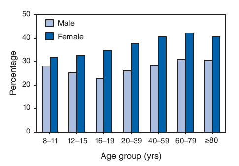

Blog · [CONFIRM: publish date, YYYY-MM-DD] · Mark Stepchin
What Body-Fat Percentages Actually Look Like: The Measured Photos, Not the Charts
By Mark Stepchin · [CONFIRM: publish date]
I build Recomp: Progress Photo Tracker, a free progress photo app with no AI and no body-fat estimates. No app or creator in this article pays me [CONFIRM: no affiliate or sponsor deals]. This isn't medical advice.
Why can't most body-fat charts be trusted?
I couldn't tell which body-fat charts were real, so I traced where the images came from. [MARK: one sentence on where you kept seeing these charts, for example Reddit, Instagram or a coach's handout.]
The widely copied charts use stock or AI images. BuiltLean's author, Marc Perry, writes: "Most of the images I purchased from stock photography websites." FitCommit labels its pictures "AI-generated visual references". GainFrame's body-fat pages show "photorealistic reference physique" images. RippedBody uses real client photos but doesn't say the numbers were measured.
Creators who measured people agree. Menno Henselmans: "Somebody just took a bunch of stock photos and put some numbers on them" (men's DEXA page). Jeff Nippard says the rest come from "calipers or handheld devices" (video). How far those miss is in How Accurate Are AI Body-Fat Estimates?
Which photo sets were actually measured?
Three video sets show real people with lab measurements, and all three can be embedded here. None gives every subject's height and weight.
| Set | Method | Range | Same lighting? | Same person at several levels? | Height and weight |
|---|---|---|---|---|---|
| Jeff Nippard, 50% to 5% panel, Nov 2025 | DEXA plus BIA, measured by him | About 50% to 5%, men and women | Yes, "under the exact same lighting" | Nippard himself, 20.6% and 9.0% | Only Nippard's: 5'5", 160 to 180 lb (73 to 82 kg) [CONFIRM: panel heights and weights, if shown on screen] |
| Menno Henselmans, men's DEXA scans, Aug 2025 | Mostly DEXA, other lab methods named | 4.1% to 43% | No | Yes, four men, from 6:07 | Not given |
| Menno Henselmans, women's DEXA scans, Aug 2025 | Mostly DEXA, other lab methods named | 14% to 44% | No | Yes, three women | Not given |
Menno's photos come from his clients and students, used with their "explicit permission" (women's DEXA page). That permission is his, so this page embeds the videos instead of copying stills.
What do 40%, 30%, 20%, 15%, 10% and 5% look like on men?
Each row is one to three real men measured by DEXA in Nippard's video, with the chapter where they appear. The descriptions are his words.
| DEXA level | Who | Chapter | What Nippard points out |
|---|---|---|---|
| About 40% | Hmonish 37.2%, Matthew 43.8% | 5:39 | "The waistline is down" from 50%, "but overall body fat distribution is still similar" |
| About 30% | Septari 33.3%, Greg 32.5% | 8:37 | "30% can look quite different depending on your structure" |
| About 20% | Jay 20.8%, Nicholas 19%, Nippard 20.6% | 11:54 | "Under good lighting, you should even see the outline of your abs when you flex them" |
| About 15% | Shamar 15.3% | 15:03 | "Clear muscle separation, even some vascularity," abs "clearly visible, even under average lighting" |
| About 12% | Jimmy 12.1% | 18:58 | "A fully defined six-pack with just a little fat covering the lower abdominals" |
| About 10% | Nicholas 10.5%, Ali 9.0% [CONFIRM: spelling, Ali or Olly], Nippard 9.0% | 21:27 | "Visible separation in all the heads of any given muscle" |
| About 8% | Luke 8.4%, natural physique pro | 25:42 | "Clear deep striations in almost all your muscle groups" |
| About 5% | Lachlan 5.5%, 3 weeks before a show | 27:57 | "Dense, grainy muscle separation" |
Abs show up at a higher percentage than most lifters expect. Menno's rule of thumb: if you can't see your abs "not even when you flex," you're likely "above 15% body fat, probably closer to 20%" (men's DEXA page).
The bottom rows are a contest-prep state, not a target. Nippard calls 5% "an extreme, borderline dangerous level of leanness" that "generally only makes sense in the context of bodybuilding contest prep."
What do 40%, 30%, 25%, 20%, 15% and 10% look like on women?
These rows combine Nippard's panel with Menno's women's video, whose comparisons all sit in one chapter from 1:09.
| DEXA level | Who | Source | What the creator points out |
|---|---|---|---|
| About 40% | Katie 37.6%; Dr. Natalia Spierings 39% | Nippard, 5:39; Menno | Menno on Spierings: "She carries it very well, she has a very even body fat distribution" |
| About 30% | Breen 28.4% | Nippard, 8:37 | "30% on a woman is about the same as 20% on a man" |
| About 25% | Spierings 25%, others at 25% and 26% | Menno | 25% is "still a very lean, good healthy body fat percentage"; 26% shows "a little bit of love handles" |
| About 20% | Christina 21.4% | Nippard, 11:54 | "Visible muscle shape and more definition through the midsection" |
| About 15% | Vanessa 15.7%; Spierings 14% | Nippard, 15:03; Menno | Nippard: "typically only seen in serious athletes preparing for a specific event" |
| About 10% | AJ 9.9%, pro bikini competitor; Gia 9.1%, national-level competitor | Nippard, 21:27 [CONFIRM: chapter] | AJ [CONFIRM: speaker]: hair coming out when brushed, and "my last period might have been May" |
Women look leaner than men at the same number. Nippard says women "store about 10 to 12% more essential fat than men," so "40% on a woman is visually more like 28 to 30% on a man."
The two creators disagree on how low women can go. Menno says 13% is "the upper end of essential body fat levels" for women. Getting below it is "very, very difficult." Nippard's DEXA put AJ and Gia under 10%. Three DEXA machines scanning the same 99 people gave averages 2 points apart (details), so I can't settle this.
Can you see one person at several body-fat levels?
Yes, at two or three levels, measured the same way each time. These are the same-person series I found:
- Sigvar Garfors at 6%, 11% and 17% on DEXA. Menno coached him throughout.
- A Menno client at 16%, 11% and 8%, who built muscle while cutting.
- A Menno client at 14% to 10% "across four different DEXA scans," also building muscle.
- Dr. Natalia Spierings at 39%, 25% and 14%, before she turned IFBB pro.
- One woman at 27% vs 16%, and a Menno student at 22% vs 17%.
- Jeff Nippard at 20.6% after a bulk and 9.0% on his latest scan [CONFIRM: his weight at each scan].
- Nicholas at 19% and 10.5% in Nippard's panel [CONFIRM: same person on two dates].
Items 1 to 3 start at 6:07 in Menno's men's video, and items 4 and 5 are in his women's video.
The longest one-person record I found has numbers but no photos. In a 12-month case study, a natural bodybuilder aged 26 to 27 went from 14.8% to 4.5% body fat for a contest, then back to 14.6%. His testosterone fell from 9.22 to 2.27 ng/mL during prep.
Why does the same percentage look different on two people?
Muscle changes the look the most. Septari read 33.3% and Greg 32.5%, but Septari carried 97 lb (44 kg) of lean mass and Greg 150 lb (68 kg). By my calculation, Septari weighed about 145 lb (66 kg) with 48 lb (22 kg) of fat, and Greg about 222 lb (101 kg) with 72 lb (33 kg). Menno: "with more muscle mass, you can basically have more fat and still be at a lower body fat percentage."
| Person | Lean | Fat | Total | DEXA |
|---|---|---|---|---|
| Septari | 97 lb (44 kg) | 48 lb (22 kg) | 145 lb (66 kg) | 33.3% |
| Greg | 150 lb (68 kg) | 72 lb (33 kg) | 222 lb (101 kg) | 32.5% |
Height and frame change it too. Nicholas read 19% and Jay 20.8%, but Nicholas looks different "because he's shorter and he carries more muscle," Nippard says. MedlinePlus classes a man over 5'5" with a 5.5- to 6.5-inch wrist as small-framed and over 7.5 inches as large. In 437 adults, wrist and ankle breadth tracked fat-free mass, not body fat (Himes and Bouchard, 1985).
I skip endomorph, mesomorph and ectomorph. Even the measurable version, the Heath-Carter somatotype, calls its rating "phenotypical": it describes your body today, not a fixed type [CONFIRM: an official host for Carter's manual].
Where you store fat shifts the look. Men store more "around their stomach, lower back, and neck," Nippard says. Women store more "around their hips and thighs." Menno adds that some people look lean at 15% because "they store much of their fat on their legs."
Lighting can hide a 7-point difference. In Menno's photos of one man at 12% and 19%, bad lighting hides most of the gap. His note: "lighting can have a huge effect on how lean somebody looks."
How many pounds of fat is that on you?
Multiply your body weight by the percentage. A 175-lb (79 kg) person at 20% carries about 35 lb (16 kg) of fat, and at 30% about 52 lb (24 kg). What 1 lb (0.45 kg) of fat actually looks like next to a pound of muscle is in [LINK: C article].
| Body weight | 10% | 15% | 20% | 25% | 30% | 35% | 40% |
|---|---|---|---|---|---|---|---|
| 130 lb (59 kg) | 13 (6) | 20 (9) | 26 (12) | 32 (15) | 39 (18) | 46 (21) | 52 (24) |
| 150 lb (68 kg) | 15 (7) | 22 (10) | 30 (14) | 38 (17) | 45 (20) | 52 (24) | 60 (27) |
| 175 lb (79 kg) | 18 (8) | 26 (12) | 35 (16) | 44 (20) | 52 (24) | 61 (28) | 70 (32) |
| 200 lb (91 kg) | 20 (9) | 30 (14) | 40 (18) | 50 (23) | 60 (27) | 70 (32) | 80 (36) |
| 225 lb (102 kg) | 22 (10) | 34 (15) | 45 (20) | 56 (26) | 68 (31) | 79 (36) | 90 (41) |
By my rough calculation, the average American man carries 51 to 57 lb of fat, and the average woman 64 to 69 lb. The CDC's 2021 to 2023 averages are 68.9 in and 199.0 lb (90 kg) for men, and 63.5 in and 171.8 lb (78 kg) for women (CDC FastStats). DEXA in 2017 to 2018 put men aged 20 to 59 at 25.5% to 28.6%, and women at 37.1% to 40.0% (Liu et al., BMJ 2021).
| Group | Men | Women |
|---|---|---|
| Hispanic | 28.6% | 40.0% |
| Non-Hispanic white | 27.2% | 38.0% |
| Non-Hispanic Black | 25.5% | 39.2% |
| Non-Hispanic Asian | 28.2% | 37.1% |
| All adults | 33.0% | |
Body fat rises with age. In DEXA scans from 1999 to 2004, men averaged 22.9% at ages 16 to 19 and 30.9% at 60 to 79 (CDC MMWR QuickStats). Women went from 32.0% at ages 8 to 11 to 42.4% at 60 to 79.

What should you compare yourself with instead?
Compare yourself with yourself, not with a stranger's chart. Shoot the same light, pose, distance and time of day each week, and log your weight with each set. My progress photo guide covers the setup.
I built Recomp around that routine: a weekly reminder, photos with your weight, and any two dates side by side. It has no AI and gives no body-fat number.
What's still unresolved
I haven't found a measured series of one person from about 30% down to 10%, with height and weight at every scan. The closest are Spierings' three DEXA levels and Menno's clients, and those still carry DEXA's own error. If you've had several DEXA scans with photos on the same days, I'd like to see them: [MARK: contact email — Gmail or the address on /support/].
FAQ
What does 15% body fat look like on a man?
In Nippard's DEXA panel, Shamar at 15.3% shows "clear muscle separation, even some vascularity," with abs visible under average lighting.
What does 25% body fat look like on a woman?
Menno calls 25% "still a very lean, good healthy body fat percentage for women." His women's video shows Dr. Natalia Spierings at 25% by DEXA.
Are body fat percentage charts accurate?
Most aren't measured. BuiltLean's chart uses mostly stock photos, and FitCommit labels its images AI-generated.
What is the average body fat percentage in the US?
By DEXA in 2017 to 2018, it was 33.0% for adults aged 20 to 59: about 25% to 29% for men and 37% to 40% for women.
Sources
Videos and creator pages
- Jeff Nippard. What Every Body Fat % Actually Looks Like (50% to 5%), Nov 9, 2025. Sponsored by MacroFactor, his own app.
- Menno Henselmans. What body fat percentages REALLY look like: 50 actual men's DEXA scans, Aug 26, 2025, with transcript.
- Menno Henselmans. What body fat percentages REALLY look like: 50 actual women's DEXA scans, Aug 29, 2025, with transcript.
Studies and data
- Rossow LM, Fukuda DH, Fahs CA, Loenneke JP, Stout JR. Natural bodybuilding competition preparation and recovery: a 12-month case study. Int J Sports Physiol Perform, 2013.
- Liu B, Du Y, Wu Y, et al. Trends in obesity and adiposity measures by race or ethnicity among adults in the United States 2011-18. BMJ, 2021.
- CDC National Center for Health Statistics. FastStats: Body Measurements, NHANES August 2021 to August 2023.
- CDC. QuickStats: Mean Percentage Body Fat, by Age Group and Sex, NHANES 1999–2004. MMWR, 2008.
- Himes JH, Bouchard C. Do the new Metropolitan Life Insurance weight-height tables correctly assess body frame and body fat relationships? Am J Public Health, 1985.
- MedlinePlus. Determining body frame size.
- Carter JEL. The Heath-Carter Anthropometric Somatotype: Instruction Manual, San Diego State University, 2002. Method first published by Heath and Carter, 1967.
Charts I checked
- BuiltLean. Body Fat Percentage Photos of Men & Women. Mostly stock photos, per the author.
- FitCommit. Body fat. AI-generated images, per the page.
- GainFrame. Body fat. "Photorealistic reference physique" images, per the page.
- RippedBody. Body fat guide. Real client photos, measurement not stated.
See the progress buried in your camera roll
Import your photos and weight in under a minute. Compare progress photos on a before-and-after timeline, scroll to any date instantly, and align photos on the fly. Your photos and weight never leave your device.